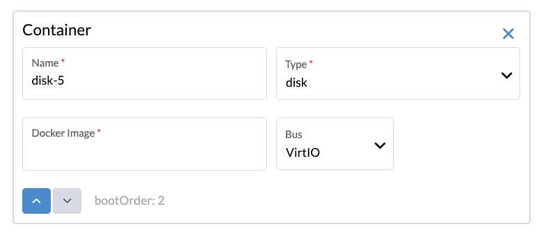

Crear una máquina virtual
Instrucciones para crear una máquina virtual
-
INTERFAZ DE USUARIO
-
API
-
Terraform
Puedes crear una o más máquinas virtuales desde la página de Máquinas Virtuales.
|
Por favor, consulta esta página para crear máquinas virtuales de Windows. |
-
Elige la opción para crear una o varias instancias de máquina virtual.
-
Selecciona el espacio de nombres de tus máquinas virtuales; solo el espacio de nombres
harvester-publices visible para todos los usuarios. -
El nombre de la VM es un campo obligatorio.
-
(Opcional) La plantilla de VM es opcional, puedes elegir la plantilla
iso-image,raw-imageowindows-iso-imagepara acelerar la creación de tu instancia de máquina virtual. -
En la pestaña Conceptos básicos, configura los siguientes ajustes:
-
CPU y Memoria: Puedes asignar un máximo de 254 vCPUs. Como mejor práctica, asegúrate de que el número de vCPUs asignadas a cada máquina virtual no exceda el número de hilos de procesador físico disponibles en el host. Si no se espera que las máquinas virtuales consuman completamente los recursos asignados la mayor parte del tiempo, puedes utilizar la configuración
overcommit-configpara optimizar la asignación de recursos físicos. -
Clave SSH: Selecciona claves SSH o sube nuevas claves.
-
-
Selecciona una imagen de VM personalizada en la pestaña Volúmenes. El disco por defecto será el disco raíz. Puedes añadir más discos a la máquina virtual.
-
Para configurar redes, ve a la pestaña Redes.
-
La Red de Gestión se añade por defecto; puedes eliminarla si la red VLAN está configurada.
-
También puedes añadir redes adicionales a las máquinas virtuales utilizando redes VLAN. Puedes configurar las redes VLAN en Redes → Avanzadas primero.
Si la máquina virtual tiene una interfaz conectada a la red
mgmty otra conectada a una red VLAN, el nodo puede no ser capaz de alcanzar la dirección IPmgmtde la máquina virtual. Este problema de conexión ocurre cuando la puerta de enlace de la otra red anula la ruta predeterminada de la máquina virtual, resultando en un enrutamiento que prefiere la red VLAN para todo el tráfico entrante y saliente, incluso el tráfico destinado a la redmgmt. -
(Opcional) Establece reglas de afinidad de nodo en la pestaña Programación de Nodos.
-
(Opcional) Establece reglas de afinidad de carga de trabajo en la pestaña Programación de VM.
-
Las opciones avanzadas como la estrategia de ejecución, el tipo de sistema operativo y los datos de cloud-init son opcionales. Puedes configurarlas en la sección Opciones Avanzadas cuando sea aplicable.

Para crear máquinas virtuales utilizando la API de Kubernetes, crea un objeto VirtualMachine.
+
apiVersion: kubevirt.io/v1
kind: VirtualMachine
metadata:
name: new-vm
namespace: default
spec:
runStrategy: RerunOnFailure
template:
spec:
domain:
cpu:
cores: 2
sockets: 1
threads: 1
memory: "3996Mi"
devices:
disks: []
interfaces:
- name: default
model: virtio
masquerade: {}
machine:
type: q35
resources:
requests:
cpu: "125m"
memory: "2730Mi"
limits:
cpu: 2
memory: "4Gi"
networks:
- name: default
pod: {}Para más información, consulta la referencia de la API.
Para crear una máquina virtual utilizando el [Proveedor de Terraform de Harvester](https://registry.terraform.io/providers/harvester/harvester/latest), define un bloque de recurso harvester_virtualmachine:
resource "harvester_virtualmachine" "opensuse154" {
name = "opensuse154"
namespace = "default"
restart_after_update = true
cpu = 2
memory = "2Gi"
run_strategy = "RerunOnFailure"
hostname = "opensuse154"
machine_type = "q35"
ssh_keys = [
harvester_ssh_key.mysshkey.id
]
network_interface {
name = "nic-1"
network_name = harvester_network.cluster-vlan1.id
wait_for_lease = true
}
disk {
name = "rootdisk"
type = "disk"
size = "10Gi"
bus = "virtio"
boot_order = 1
image = harvester_image.opensuse154.id
auto_delete = true
}
cloudinit {
user_data_secret_name = harvester_cloudinit_secret.cloud-config-opensuse154.name
network_data_secret_name = harvester_cloudinit_secret.cloud-config-opensuse154.name
}
}Volúmenes
Puedes añadir uno o más volúmenes adicionales a través de la pestaña Volumes, por defecto el primer disco será el disco raíz, puedes cambiar el orden de arranque arrastrando y soltando volúmenes, o utilizando los botones de flecha.
Un disco puede hacerse accesible a través de los siguientes tipos:
| tipo | description |
|---|---|
disco |
Este tipo expone el volumen como un disco ordinario a la máquina virtual. |
cd-rom |
Este tipo expone el volumen como una unidad de cd-rom a la máquina virtual. Es de solo lectura por defecto. |
Se puede especificar la Clase de Almacenamiento de un volumen al añadir un nuevo volumen vacío; para otros volúmenes (como imágenes de máquinas virtuales), la Clase de Almacenamiento se define durante la creación de la imagen.
Si estás utilizando almacenamiento externo, asegúrate de que se seleccionen la Clase de Almacenamiento y el Modo de Volumen correctos. Por ejemplo, un volumen con la clase de almacenamiento nfs-csi debe utilizar el modo de volumen sistema de archivos.
|
importante
Al crear volúmenes a partir de una imagen de máquina virtual, asegúrate de que el tamaño del volumen sea mayor o igual al tamaño de la imagen. El volumen puede corromperse si el tamaño de volumen configurado es menor que el tamaño de la imagen subyacente. Esto es particularmente importante para las imágenes qcow2 porque el tamaño virtual es típicamente mayor que el tamaño físico. Por defecto, SUSE Virtualization establece el tamaño del volumen en 10 GiB o el tamaño virtual de la imagen de la máquina virtual, el que sea mayor. |

Añadiendo un disco de contenedor
Un disco de contenedor es un volumen de almacenamiento efímero que puede asignarse a cualquier número de máquinas virtuales y proporciona la capacidad de almacenar y distribuir discos de máquinas virtuales en el registro de imágenes de contenedor. Un disco de contenedor es:
-
Una herramienta ideal para replicar un gran número de cargas de trabajo de máquinas virtuales o inyectar controladores de máquina que no requieren datos persistentes. Los volúmenes efímeros están diseñados para máquinas virtuales que necesitan más almacenamiento pero no les importa si esos datos se almacenan de forma persistente a través de reinicios de la máquina virtual o solo esperan que algunos datos de entrada de solo lectura estén presentes en archivos, como datos de configuración o claves secretas.
-
No es una buena solución para ninguna carga de trabajo que requiera discos raíz persistentes a través de reinicios de la máquina virtual.
Se añade un disco de contenedor al crear una máquina virtual proporcionando una imagen de Docker. Al crear una máquina virtual, sigue estos pasos:
-
Ve a la pestaña de Volúmenes.
-
Selecciona Añadir Contenedor.

-
Introduce un Nombre para el disco de contenedor.
-
Elige un disco Tipo.
-
Añade una Imagen de Docker.
-
Una imagen de disco, con el formato qcow2 o raw, debe colocarse en el directorio
/disk. -
Se admiten los formatos raw y qcow2, pero se recomienda qcow2 para reducir el tamaño de la imagen del contenedor. Si utilizas un formato de imagen no compatible, la máquina virtual quedará atascada en un estado
Running. -
Un disco de contenedor también te permite almacenar imágenes de disco en el directorio
/disk. Un ejemplo de cómo crear tal imagen de contenedor se puede encontrar aquí.
-
-
Elige un tipo de Bus.

Redes
Puedes elegir añadir tanto el management network como el VLAN network a tus instancias de máquina virtual a través de la pestaña Networks, el management network es opcional si tienes la red VLAN configurada.
Las interfaces de red se configuran a través del campo Type. Describen las propiedades de las interfaces virtuales vistas dentro del sistema operativo invitado:
| tipo | description |
|---|---|
puente |
Conectar usando un puente de Linux |
enmascaramiento |
Conectar usando reglas del paquete de tablas IP para NAT el tráfico |
Red de gestión
Una red de gestión representa la interfaz eth0 de máquina virtual predeterminada configurada por la solución de red del clúster que está presente en cada máquina virtual.
Por defecto, las máquinas virtuales son accesibles a través de la red de gestión dentro de los nodos del clúster.
Red Secundaria
También es posible conectar máquinas virtuales utilizando redes adicionales con las SUSE Virtualization integradas redes VLAN.
En la VLAN de puente, las máquinas virtuales están conectadas a la red del host a través de un Linux bridge. La dirección IPv4 de la red se delega a la máquina virtual a través de DHCPv4. La máquina virtual debe configurarse para utilizar DHCP para adquirir direcciones IPv4.
Programación de nodos
Node Scheduling te permite restringir en qué nodos se pueden programar tus máquinas virtuales en función de las etiquetas de los nodos.

Puedes elegir ejecutar máquinas virtuales en lo siguiente:
-
Cualquier nodo disponible
-
Un nodo específico
En el siguiente ejemplo, el nodo objetivo tiene el nombre de host harv21.
nodeSelector: kubernetes.io/hostname: harv21
|
La máquina virtual puede ser no migrable si limitas la programación a un nodo específico. |
-
Nodos que coinciden con las reglas de programación
Obtienes mayor flexibilidad al programar una máquina virtual en un grupo de nodos. En el siguiente ejemplo, la máquina virtual se puede programar en nodos con una etiqueta específica. La clave es harvesterhci.io/group y el valor puede ser engineering o qa.
spec:
affinity:
nodeAffinity:
requiredDuringSchedulingIgnoredDuringExecution:
nodeSelectorTerms:
- matchExpressions:
- key: harvesterhci.io/group
operator: In
values:
- engineering
- qa
Para más información, consulta Documentación de Afinidad de Nodos de Kubernetes.
Programación de máquinas virtuales
La programación de máquinas virtuales te permite restringir en qué nodos se pueden programar tus máquinas virtuales en función de las etiquetas de las cargas de trabajo (máquinas virtuales y pods) que ya se están ejecutando en estos nodos, en lugar de las etiquetas de los nodos.
Por ejemplo, puedes combinar Required con Affinity para instruir al planificador a colocar máquinas virtuales de dos servicios en la misma zona, mejorando la eficiencia de la comunicación. Del mismo modo, el uso de Preferred con Anti-Affinity puede ayudar a distribuir máquinas virtuales de un servicio particular a través de múltiples zonas para aumentar la disponibilidad.
Consulta la Documentación de Afinidad y Anti-Afinidad de Pods de Kubernetes para más detalles.
|
Durante la fase de pre-drenaje de la actualización de versión, SUSE Virtualization puede no ser capaz de migrar en vivo las máquinas virtuales debido a unas reglas estrictas de anti-afinidad que no se pueden satisfacer. Cuando esto sucede, SUSE Virtualization apaga automáticamente estas máquinas virtuales para desbloquear la actualización de versión y evitar que el proceso se reinicie de manera insegura. |
Reglas de afinidad aplicadas automáticamente
SUSE Virtualization puede aplicar automáticamente ciertas reglas de afinidad dependiendo de cómo esté configurada una máquina virtual. Estas reglas dictan qué nodos son elegibles como objetivos de programación o migración. Si no hay otros nodos que cumplan con los criterios, la máquina virtual no puede ser programada ni migrada.
Para más información, consulta Máquinas virtuales no programables.
|
El webhook de SUSE Virtualization revierte los cambios manuales a las reglas aplicadas automáticamente. |
Conceptos de red relacionados
El proceso general para configurar redes para máquinas virtuales implica lo siguiente:
-
Se crea una red de clúster y una configuración de red correspondiente. Solo los nodos que están cubiertos por la configuración de red configuran los dispositivos de red.
-
Se crea una red de VM con un ID de VLAN específico.
En el siguiente ejemplo, se realizan pasos para configurar una red de clúster y definir una máquina virtual que se conecta a esta red de clúster.
-
Se crea una red de clúster llamada
cn2. -
Se crea una configuración de red llamada
cn2-vc1.cn2-vc1cubrenode1ynode2. -
Se crea una red de VM llamada
cn2-nad-100con el ID de VLANvlan id 100. -
Una máquina virtual llamada
VM vm1se conecta a una red secundaria llamadacn2-nad-100.
SUSE Virtualization asegura lo siguiente:
-
El controlador de SUSE Virtualization etiqueta automáticamente los objetos de Kubernetes
node.kubectl get node node1 -oyaml ... metadata: labels: network.harvesterhci.io/cn2: "true" network.harvesterhci.io/mgmt: "true" network.harvesterhci.io/vlanconfig: cn2-vc1 ... -
El webhook SUSE Virtualization actualiza automáticamente el objeto
virtualmachine.spec: template: spec: affinity: nodeAffinity: requiredDuringSchedulingIgnoredDuringExecution: nodeSelectorTerms: - matchExpressions: - key: network.harvesterhci.io/cn2 operator: In values: - 'true' -
La máquina virtual está programada solo en
node1onode2.
|
SUSE Virtualization aplica múltiples reglas de afinidad cuando una máquina virtual se conecta a múltiples redes de VM que están respaldadas por múltiples redes de clúster. Las reglas aplicadas determinan colectivamente los nodos que son elegibles como objetivos de programación o migración. No se aplican reglas de afinidad cuando una máquina virtual se conecta a redes de VM que están respaldadas por |
| La máquina virtual es no migrable cuando solo hay un nodo en la red de clúster. |
Conceptos relacionados con la fijación de CPU
Cuando habilitas el Gestor de CPU en los nodos, SUSE Virtualization aplica la siguiente etiqueta a los objetos node relacionados.
...
metadata:
labels:
cpumanager: "true"
...Cuando habilitas la fijación de CPU durante la creación de la máquina virtual, SUSE Virtualization aplica una regla de afinidad que asegura que la máquina virtual se programe solo en nodos donde el Gestor de CPU está habilitado.
spec:
template:
spec:
affinity:
nodeAffinity:
requiredDuringSchedulingIgnoredDuringExecution:
nodeSelectorTerms:
- matchExpressions:
- key: cpumanager
operator: In
values:
- 'true'| La máquina virtual es no migrable si el Gestor de CPU está habilitado en un solo nodo. |
Anotaciones
SUSE Virtualization te permite adjuntar metadatos personalizados a las máquinas virtuales utilizando anotaciones. Estos pares clave-valor habilitan características o comportamientos extendidos sin requerir cambios en la configuración central de la máquina virtual.
Puedes usar la anotación harvesterhci.io/custom-ip para establecer una dirección IP en la interfaz de usuario SUSE Virtualization con fines de visualización. Esto es útil cuando la máquina virtual no puede informar su dirección IP debido a un qemu-guest-agent faltante u otras razones.
Opciones avanzadas
Estrategia de Ejecución
SUSE Virtualization utilizaba anteriormente el campo Running (un booleano) para determinar si la instancia de la máquina virtual debería estar en ejecución. Sin embargo, un simple valor booleano no siempre es suficiente para describir completamente el comportamiento deseado por el usuario. Por ejemplo, en algunos casos el usuario quiere poder apagar la instancia desde dentro de la máquina virtual. Si se utiliza el campo running, la máquina virtual se reiniciará inmediatamente.
Para cumplir con los requisitos del escenario de más usuarios, se introduce el campo RunStrategy. Esto es mutuamente excluyente con Running porque sus condiciones se superponen algo. Actualmente hay cuatro RunStrategies definidos:
-
Siempre: La instancia de máquina virtual siempre existirá. Si la instancia de máquina virtual falla, se generará una nueva. Este es el mismo comportamiento que
Running: true. -
RerunOnFailure (por defecto): Si la instancia anterior falló en un estado de error, se volverá a generar una instancia de máquina virtual. Si el invitado se detiene correctamente (por ejemplo, se apaga desde dentro del invitado), no se volverá a crear.
-
Manual: La presencia o ausencia de una instancia de máquina virtual se controla únicamente por las acciones de VirtualMachine de
start/stop/restart. -
Detener: No habrá instancia de máquina virtual. Si el invitado ya está en funcionamiento, se detendrá. Este es el mismo comportamiento que
Running: false.
Configuración de la nube
SUSE Virtualization admite la capacidad de asignar un script de inicio a una instancia de máquina virtual que se ejecuta automáticamente cuando la máquina virtual se inicializa.
Estos scripts se utilizan comúnmente para automatizar la inyección de usuarios y claves SSH en máquinas virtuales para proporcionar acceso remoto a la máquina. Por ejemplo, se puede utilizar un script de inicio para inyectar credenciales en una máquina virtual que permite a un trabajo de Ansible que se ejecuta en un host remoto acceder y aprovisionar la máquina virtual.
Cloud-init
Cloud-init es un proyecto ampliamente adoptado y el método estándar de la industria multidistribución para la inicialización de instancias en la nube. Es compatible con todos los principales proveedores de imágenes en la nube como SUSE, Redhat, Ubuntu, etc., y cloud-init se ha establecido como el método por defecto para proporcionar scripts de inicio a máquinas virtuales.
SUSE Virtualization admite la inyección de tus scripts de inicio de cloud-init personalizados en una instancia de máquina virtual mediante el uso de un disco efímero. Las máquinas virtuales con el paquete cloud-init instalado detectarán el disco efímero y ejecutarán scripts de datos de usuario y de red personalizados al arrancar.
Ejemplo de configuración de contraseña para el usuario predeterminado:
#cloud-config
password: password
chpasswd: { expire: False }
ssh_pwauth: TrueEjemplo de configuración de datos de red utilizando DHCP:
network:
version: 1
config:
- type: physical
name: eth0
subnets:
- type: dhcp
- type: physical
name: eth1
subnets:
- type: dhcpTambién puedes utilizar la función Advanced > Cloud Config Templates para crear una plantilla de configuración de cloud-init predefinida para la máquina virtual.
|
La configuración de red de una máquina virtual que ejecuta una versión de Ubuntu posterior a 16.04 es probable que sea gestionada por La máquina virtual restaurada conserva el ID de máquina de la máquina virtual original. Si |
Instalando el agente invitado de QEMU
El agente invitado de QEMU es un daemon que se ejecuta en la instancia de la máquina virtual y pasa información al host sobre la máquina virtual, los usuarios, los sistemas de archivos y las redes secundarias.
La casilla Install guest agent está habilitada por defecto cuando se crea una nueva máquina virtual.

|
Si tu sistema operativo es openSUSE y la versión es inferior a 15.3, por favor reemplaza |
Dispositivo TPM
Módulo de Plataforma Confiable (TPM) es un criptoprocesador que asegura el hardware utilizando claves criptográficas.
Según Requisitos de Windows 11, el dispositivo TPM 2.0 es un requisito indispensable de Windows 11.
En la interfaz de SUSE Virtualization, puedes añadir un dispositivo TPM 2.0 emulado a una máquina virtual marcando la casilla Enable TPM en la pestaña Opciones Avanzadas.
|
Actualmente, solo se admiten vTPMs no persistentes, y su estado se borra después de cada apagado de la máquina virtual. Por lo tanto, Bitlocker no debe estar habilitado. |
Arranque único para instalación de ISO
Al crear una máquina virtual para arrancar desde cd-rom, puedes utilizar la opción bootOrder para que el sistema operativo pueda arrancar desde cd-rom durante la instalación de la imagen, y arrancar desde el disco cuando la instalación esté completa sin desmontar el cd-rom.
El siguiente ejemplo describe cómo instalar una imagen ISO utilizando openSUSE Leap 15.4:
-
Haz clic en Images en la barra lateral izquierda y descarga la imagen ISO de openSUSE Leap 15.4.
-
Haz clic en Virtual Machines en la barra lateral izquierda, luego crea una máquina virtual. Necesitas completar esa configuración básica de la máquina virtual.
-
Haz clic en la pestaña Volumes, en el campo Image, selecciona la imagen descargada en el paso 1 y asegúrate de que Type sea
cd-rom. -
Haz clic en Add Volume y selecciona una StorageClass existente.
-
Arrastra Volume a la parte superior de Image Volume como sigue. De esta manera, el bootOrder de Volume se convertirá en
1.

-
Haga clic en Crear.
-
Abre la máquina virtual web-vnc que acabas de crear y sigue las instrucciones dadas por el instalador.
-
Una vez que la instalación esté completa, reinicia la máquina virtual según lo indicado por el sistema operativo (puedes eliminar el medio de instalación después de arrancar el sistema).
-
Después de que la máquina virtual se reinicie, arrancará automáticamente desde el volumen del disco y comenzará el sistema operativo.